A képek egy bipoláris tranzisztoros erősítő áramkörhöz kapcsolódó mérési eredményeket és számításokat mutatnak be. Az első ábra egy szimulált áramkört ábrázol, amelyen az egyes csomópontok feszültség- és áramértékei láthatók. A második ábra a számított értékeket tartalmazza.
Önreflexió
Az Elektrotechnika tantárgy során mélyebb betekintést nyertem az elektromos áramkörök működésébe. A tantárgy eleinte nehézkes volt de ahogy haldtunk az anyagokkal kicsit könnyebb lett.
Mikrovezérlő programozás
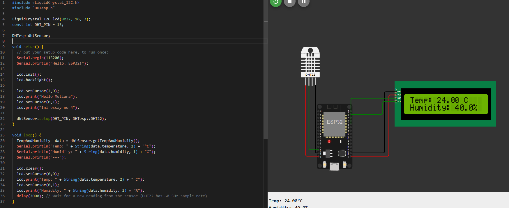
A képen wokwi szimulációs oldal segítségével elkészített Esp hőmérséklet és páratartalom érzékelő látható.
Önreflexió
A Mikrovezérlő programozás tantárgy során elsajátítottam a beágyazott rendszerek alapjait és megtanultam, hogyan lehet programozni különböző mikrovezérlőket. Ez a tantárgy valamennyire egyszerűbb volt és még talán az izgalmasabbak közé sorolnám.
2. Félév
Programozás Alapjai
A képen egy Pythonban írt egyszerű számológép program látható, amely négy alapműveletet (összeadás, kivonás, szorzás, osztás) tud elvégezni. A felhasználótól bekéri a művelet típusát és két számot, majd az eredményt kiírja.
Önreflexió
A programozás alapjait python programozási nyelven tanultuk. A python egy viszonylag egyszerű programozási nyelv, így nem akadt vele olyan sok gondunk megesett hogy csináltunk egyszerűbb játékokat is de alapvetően nem egy túl izgalmas tantárgy.
Digitális Áramkörök
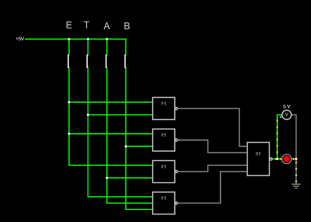
A kép egy igazság táblázat kapcsolási rajzát ábrázolja, amely a bináris számrendszerben értelmezett súlyozott összeget szemlélteti. Az oszlopok különálló biteket jelölnek, ahol az E, T, A, B oszlopok bináris súlyokat képviselnek, az F⁴ pedig kiegészítő bitként szerepel.
Önreflexió
A digitális áramkörök tanulmányozása közben megértettem, hogy az egyszerű logikai kapuk (ÉS, VAGY, NEM) működését. Én szerettem ezt a tantárgyat nagyrészt egyszerű és könnyen érthető volt és a tanárnő is sokat segített.
12. évfolyam
1. Félév
Adatbáziskezelés Alapjai
A képen relációs adattáblák összeköttetése látható ami az inner join paranccsal történik.
Önreflexió
Az adatbázis kezelésben megtanultuk a relaciós adatmodellek alkalmazását és annak programozását, és a rekordok feltöltését. Az adatbázis kezelés is egy viszonylag egyszerűbb tantárgy volt és a tanárnő is nagyon segítőkész volt.
Hálózatkezelés
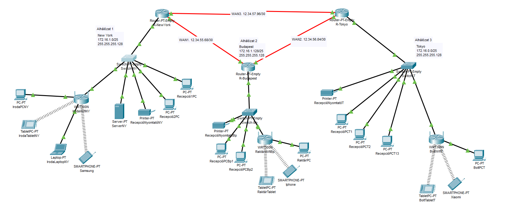
A kép egy hálózati topológiát ábrázol a Cisco Packet Tracer szoftverben, amelyben három különböző telephely New York, Budapest és Tokió van összekötve. Az ábra routereket, switcheket, számítógépeket, nyomtatókat és egyéb eszközöket mutat be, amelyek vezetékes és vezeték nélküli kapcsolatokkal kommunikálnak egymással. Minden telephely külön alhálózattal rendelkezik.
Önreflexió
A Hálózatkezelés tantárgy volt számomra a legnehezebb, de a tanárúr sokat segített így nem volt nagy probléma.
2. Félév
PLC programozás
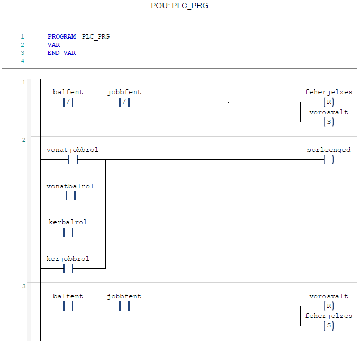
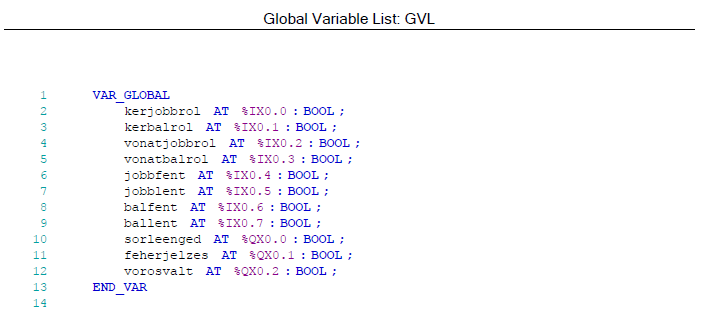
A PLC (Programmable Logic Controller) egy ipari automatizálási rendszer, amelyet elsősorban a gépek és folyamatok irányítására használnak. Az én feladatom egy vasúti kereszteződés/átjárónál a jelzőlámpák és sorompók programozása volt.
Önreflexió
A PLC tantárgy során átfogó ismereteket szereztem a programozható logikai vezérlők működéséről és alkalmazásáról ipari környezetben. Megértettem a különböző programozási nyelvek (például létra-diagram, struktúrált szöveg) működését, valamint azt, hogyan lehet hatékonyan megtervezni és kivitelezni automatizált vezérlőrendszereket.
Számítógépes szimuláció
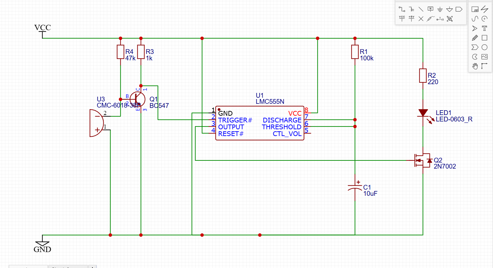
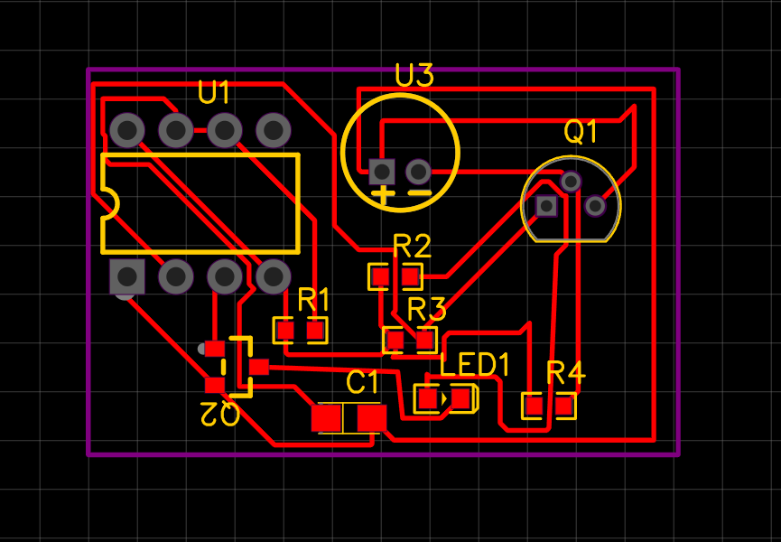
Az első képen egy tapskapcsoló kapcsolási rajza látható az EasyEDA felületén, a második képen pedig ennek a modellnek a nyomtatott áramköri lapját láthatjuk.
Önreflexió
A számítógépes szimuláció tantárgy során megismerhető a valós folyamatok modellezése és vizsgálata különböző szimulációs szoftverek segítségével. A tantárgy bemutatja, hogyan lehet rendszerek viselkedését előre jelezni és optimalizálni.
13. évfolyam
1. Félév
Munkavállalói idegen nyelven
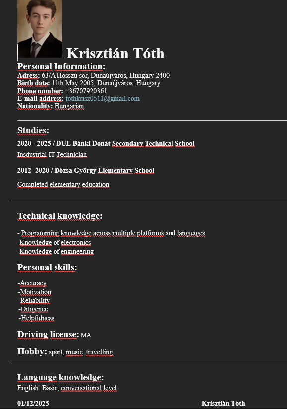
A képen az angol nyelvű önéletrajzom látható amit a profession.hu egyik mintája segítségével készítettem.
Önreflexió
Az önéletrajz írása során megtanultam, hogy miként mutassam be a tapasztalataimat és készségeimet a leghatékonyabb módon.
IoT
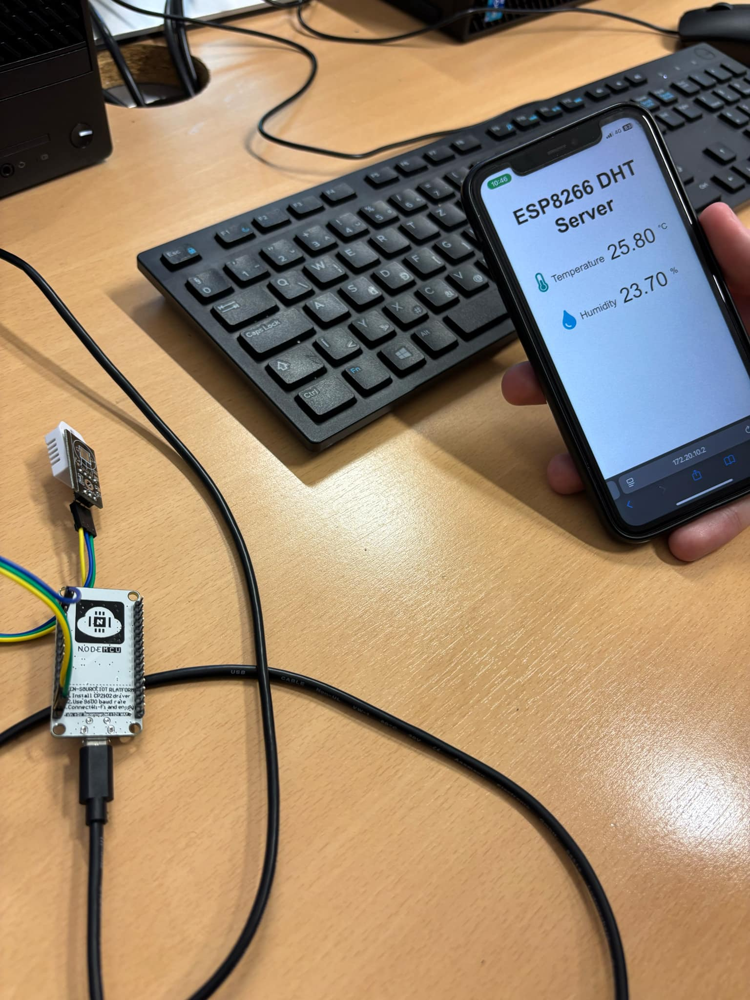
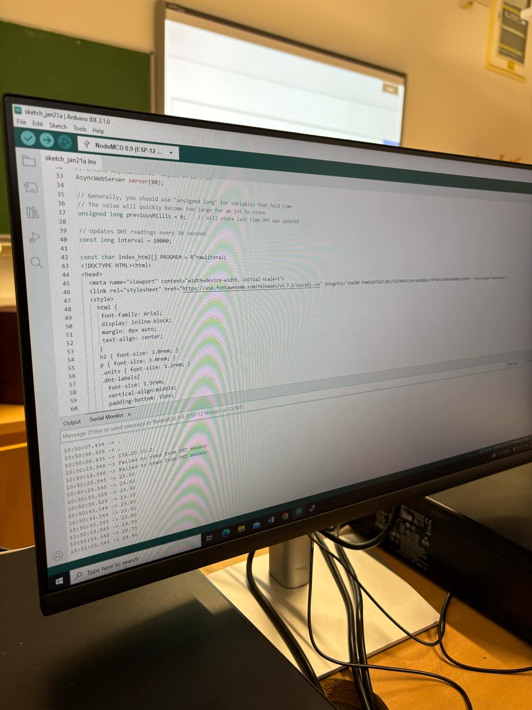
A képen egy hőmérséklet érzékelő látható, amit a géphez csatlakoztattunk, majd telefonról interneten keresztül csatlakoztunk a gépre így a telefonon jelent meg a hőmérséklet és páratartalom értéke.
Önreflexió
Az IoT tantárgy során átfogó betekintést kaptam az intelligens eszközök és hálózatok működésébe, valamint azok hatásaira a mindennapi életben és az iparban.
2. Félév
Programfejlesztés
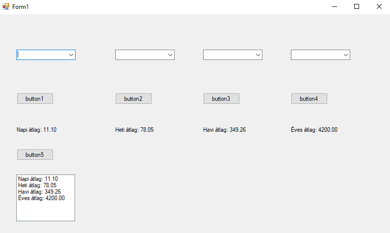
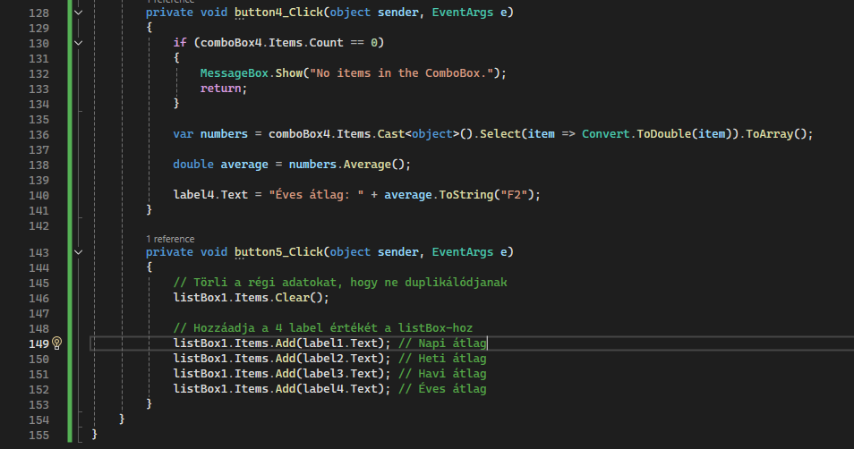
A képen egy energiafogyasztási adatbázishoz kapcsolt word formot láthatunk, itt a gombok anpi, heti, havi, éves átlagot jelenítenek meg, valamint az utolsó gomb ezeket listázza.
Önreflexió
A Windows Forms használata során gyakorlatot szereztem grafikus felhasználói felületek fejlesztésében, és jobban megértettem az interaktív alkalmazások működését.
Robottechnika CAD/CAM
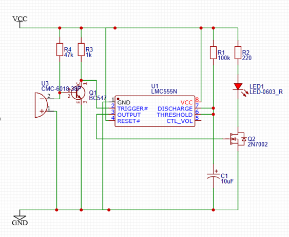
Az első képen egy NYÁK lap látható a másikon pedig egy tapskapcsoló kapcsolási rajza.
Önreflexió
A robottechnika során megismerhető az automatizált rendszerek működése és a robotok ipari alkalmazása.
Önreflexió
Az öt éves középiskolai tanulmányaim során, ipari informatikai technikusként, rengeteg hasznos ismeretet szereztem, amelyek nemcsak a szakmai képességeimet, hanem a problémamegoldó gondolkodásomat is segítették. A tantárgyak széles spektruma, mint a programozás, elektronika, mikrovezérlő programozás és hálózatkezelés, lehetőséget adott arra, hogy megértsem a különböző technológiai megoldások összetettségét és alkalmazhatóságát a valós ipari környezetben.